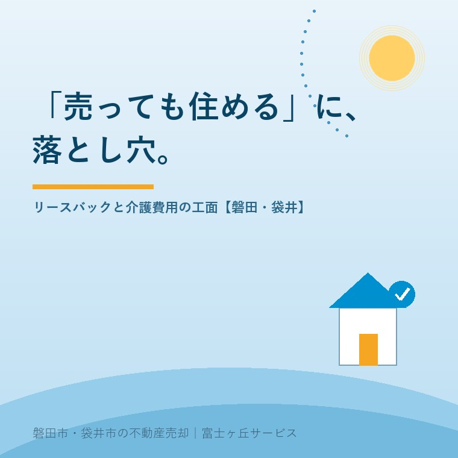

2026年7月30日｜カテゴリ：老後資金・介護費用・売却の選択肢

この記事の要点
Q. 介護のお金が心配。「自宅を売っても住み続けられる」というリースバック、使っていい？
A. リースバックは便利な半面、売却価格が相場より安め・家賃が相場より高め・契約によっては住み続けられない、という落とし穴があり、国民生活センターも2025年5月に強引な勧誘への注意喚起を出しています。施設入居が視野にあるなら、「本当にその家に住み続ける必要があるか」を先に考えると、通常の売却のほうが手取りが大きいことも多いのです。磐田市・袋井市・森町では、介護施設の運営から不動産事業を始めた富士ヶ丘サービスのような「介護×不動産」専門の会社に、介護費用の見通しとセットで相談するという選択肢があります。
「家を売ったのに、そのまま住み続けられます」──テレビCMやチラシでよく見かけるリースバック。親の介護費用や施設の入居一時金を工面する場面で、検討される方が増えています。ただ、この仕組みには知っておくべき注意点が多く、国民生活センターが2025年5月に「強引に勧められる住宅のリースバック契約にご注意！」という注意喚起を発表し、国土交通省も消費者向けガイドブックを公表しているほどです。今日は、介護と不動産の両方を扱う会社の立場から、リースバックの仕組みと落とし穴、そして「介護費用を工面する3つの道」を整理します。
リースバックは、自宅を事業者に売却して代金を受け取り、同時にその事業者と賃貸借契約を結んで、家賃を払いながら同じ家に住み続ける仕組みです。まとまった現金が早く手に入る、引っ越さなくてよい、固定資産税や維持費の負担がなくなる──この3点は確かなメリットで、「住み続けながら現金化したい」という状況にはかみ合います。
ただし、これは「売却」と「賃貸」という2つの契約のセットです。そして、その両方の条件が、一般の相場とは違う水準になりやすいことが、この仕組みの本質的な注意点です。
| 落とし穴 | 何が起きるか |
|---|---|
| 売却価格が安め | 買い取る事業者は賃貸経営・転売を前提とするため、市場で普通に売る場合より売却価格は低くなるのが一般的 |
| 家賃が高め | 家賃は売却価格に対する利回りから逆算されるため、周辺の賃貸相場より高くなりがち。長く住むほど「売却代金を家賃で返していく」形に |
| ずっと住めるとは限らない | 賃貸部分が定期借家契約だと、期間満了で再契約されず退去を求められる可能性がある。「ずっと住めます」という口頭説明と契約書が違う例も |
| 買戻しのハードル | 「いつでも買い戻せます」も要注意。買戻し価格は売却価格より高く設定されるのが通常で、期限や条件もある |
| 解約できない | 事業者への売却にはクーリング・オフの適用がなく、契約が成立すると無条件解除はできない |
国民生活センターには、高齢者への強引な勧誘や、理解が不十分なまま契約してしまったという相談が寄せられています。検討する場合は、①その場で契約しない、②複数の事業者から条件を取って比較する、③家賃・契約期間（普通借家か定期借家か）・買戻し条件を書面で確認する、④家族や専門家に同席してもらう──国土交通省のガイドブックが勧めるこの4点を必ず守ってください。
そもそもリースバックが話題になるのは、「自宅しか大きな資産がないが、現金が必要」という場面です。選択肢は1つではありません。
| 通常の売却 | リースバック | リバースモーゲージ | |
|---|---|---|---|
| 仕組み | 市場で売って住み替え | 売って賃貸で住み続ける | 自宅を担保に借入（存命中は利息払い等、死亡時に売却などで一括返済） |
| 手にできる額 | 市場価格。3つの中で最大になりやすい | 市場より安め | 担保評価の一定割合まで（例：リ・バース60は評価額の50〜60％が上限。ただし資金使途は住宅関連に限定） |
| 住まい | 住み替え先が必要 | そのまま（ただし家賃負担・期限リスク） | そのまま（所有権は維持） |
| 向く場面 | 施設入居や住み替えが決まっている | その家に住み続ける強い理由がある | 住み続けつつ住宅関連資金が必要（一般のリバースモーゲージは生活資金可の商品も。金利上昇・評価下落のリスクあり） |
ここで大事なのは順番です。「本当にその家に住み続ける必要があるか」を先に決めること。たとえば施設への入居が近いなら、住み続ける前提のリースバックは合理的とは言えず、通常の売却で市場価格を受け取るほうが、介護費用に充てられる額は大きくなります。逆に、配偶者がその家で暮らし続けるなら、リースバックやリバースモーゲージが選択肢に入ってきます。道具の選択は、暮らしの計画の後です。
介護施設の月額費用や入居一時金は、施設の種類によって大きく異なります。当社は介護施設の運営から始まった会社なので、「この施設ならこのくらいの費用感」「その場合、自宅をどうすれば足りるか」を、介護と不動産の両面からご一緒に整理できます。磐田市・袋井市の戸建ては敷地が広く、リースバック事業者の買取対象になりにくい（またはかなり安くなる）ケースもあり、地域の実情を知る会社に市場価格の見立てを聞いてから判断することが、結果的にご家族を守ります。
また、亡くなった後や施設入居後に家が空き家になれば、保険・近隣対応・解体や税金の問題が続きます。「今の現金」だけでなく「その後の家の行き先」まで含めて設計するのが、介護×不動産の考え方です。
富士ヶ丘サービスは、磐田市・袋井市に特化した地域密着の会社として、介護費用の見通しと住まいの現金化の選択肢を、ひとつのテーブルでご相談いただけます。特定の商品への誘導ではなく、「この家なら市場でいくらか」という土台の数字づくりからお手伝いします。介護と実家の相談・実家じまい相談室もあわせてご利用ください。
ふじがおか実家カルテ｜リースバックを検討する前の「市場価格の見立て」に
その提示額、相場と比べてどうか。まず1冊で確認を。
登記情報と固定資産税通知書から、名義・道路・建物の状態と売りやすさを宅建士が机上で確認します。介護費用の工面のご相談は、ご家族の同席も歓迎です。
本記事は2026年7月30日時点の情報をもとに作成しています。リースバック・リバースモーゲージの条件は事業者・金融機関ごとに異なります。個別の契約内容は必ず書面で確認し、契約前に家族・消費生活センター（消費者ホットライン188）・専門家にご相談ください。当社は特定のリースバック商品・金融商品の勧誘は行いません。

この記事を書いた人：大石浩之（宅地建物取引士）
磐田市・袋井市・森町で「介護×相続×空き家」に特化した不動産売却支援を行う富士ヶ丘サービスの代表取締役・宅地建物取引士。介護施設の運営から不動産事業を始めた経験をもとに、売主とご家族が困らない売却を一件ずつお手伝いしています。プロフィール
磐田市・袋井市・森町の実家じまい・相続空き家相談
固定資産税通知書だけでも相談できます
住所があいまいでも、通知書や写真から名義・道路・農地・残置物の確認順を整理します。カルテ申込またはLINEで状況を送ってください。
富士ヶ丘サービス株式会社／静岡県磐田市見付5789番地1／TEL:0538-31-3308／静岡県知事 (2) 第14083号／代表取締役・宅地建物取引士 大石 浩之